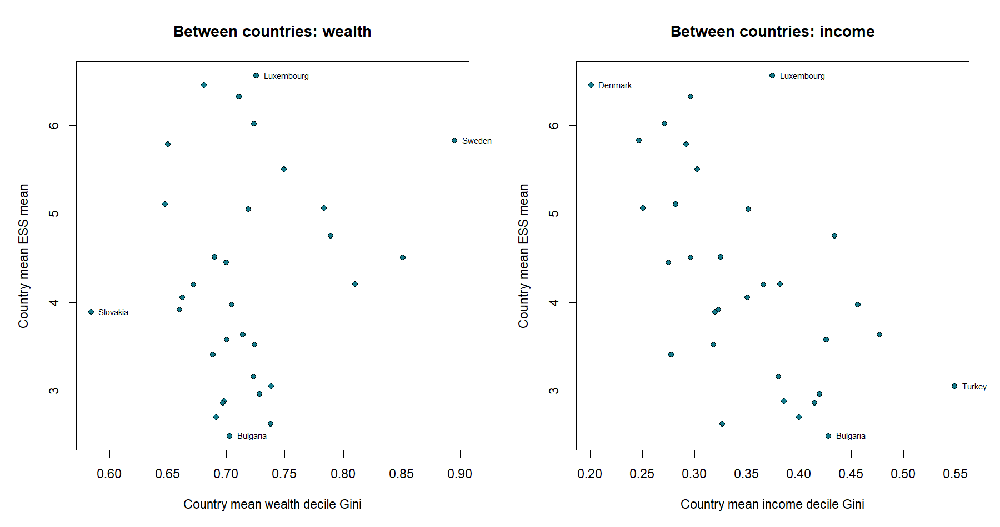
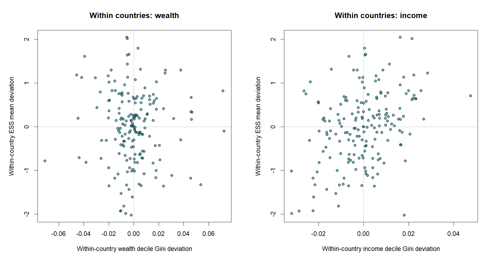
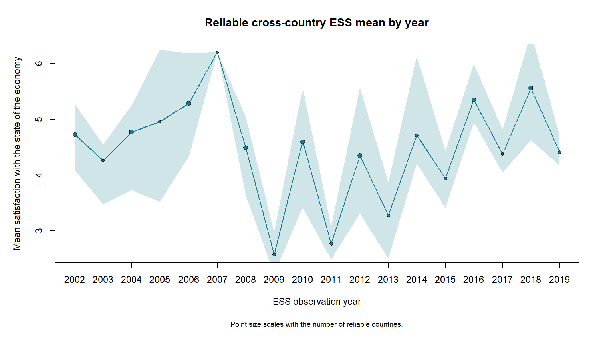

| Validity check | Passing country-years | Matched country-years |
|---|---|---|
| ESS reliable | 267 | 369 |
| Complete valid wealth deciles | 369 | 369 |
| Wealth not extrapolated | 369 | 369 |
| Complete valid income deciles | 369 | 369 |
| Income not extrapolated | 307 | 369 |
| Pass all validity checks | 225 | 369 |
ESS and WID Descriptive Analysis
This report compares country-year summaries of satisfaction with the state of the economy (ESS stfeco) with distributional series from the World Inequality Database (WID). Only years available in ESS and in both WID concepts are plotted for a country.
Data Validity
An observation is valid for comparison only when ESS flags the country-year as reliable, both WID distributions contain all ten equal-split adult decile shares and sum to one within 2.5 percentage points, and neither WID series marks the year as extrapolated. The WID metadata does not identify all interpolated years. Observations failing any rule are excluded from every section after comparability.
Data Comparability
Common Countries by Year
The bar height counts country-years that pass the validity rules above and match in ESS and both WID series. Labels show valid (matched / excluded), for example 15 (18/3).

Common Years by Country
The bar length counts valid matched years for each country. Labels show valid (matched / excluded) year counts.

Descriptive ESS-WID Association
The merged table uses the earliest matched observation in each two-year ESS round and the corresponding WID distribution. It retains ESS reliability, effective sample size, the selected post-tax income series where available, and WID extrapolation flags. The full country-round table is available as data/processed/ess_wid_country_round.csv.
All summaries and correlations below use ESS observations flagged reliable. Correlations are descriptive only; no significance tests are performed. The Gini values are approximated from WID’s ten decile shares. Negative net wealth shares can produce wealth Gini values above one.
Variance Decomposition
Between-country and within-country percentages describe where the reliable country-round variation in each measure occurs.
| variable | observations | countries | between_percent | within_percent |
|---|---|---|---|---|
| ESS mean | 185 | 32 | 64.62 | 35.38 |
| ESS IQR | 185 | 32 | 42.91 | 57.09 |
| Wealth decile Gini | 185 | 32 | 92.72 | 7.28 |
| Wealth bottom 50% share | 185 | 32 | 93.66 | 6.34 |
| Wealth top 10% share | 185 | 32 | 89.17 | 10.83 |
| Income decile Gini | 185 | 32 | 95.87 | 4.13 |
| Income bottom 50% share | 185 | 32 | 96.45 | 3.55 |
| Income top 10% share | 185 | 32 | 91.28 | 8.72 |
Between-Country Association
the mean ESS stfeco score with the corresponding decile-based WID Gini. Each point is a country’s mean across reliable ESS rounds. The two panels compare the mean ESS stfeco score with the corresponding decile-based WID Gini. Only a few points farthest from the center are labeled to keep the scatter readable.

Within-Country Association
Values are demeaned within each country, separating changes over time from persistent differences between countries.

ESS Year Pattern
The line shows the reliable cross-country mean by year; the band spans the cross-country 25th to 75th percentiles. Larger points indicate more reliable country observations in that year.

Pearson Correlations
Pairwise-complete descriptive correlations among ESS mean/IQR and WID Gini and selected group shares.
| measure | ESS mean | ESS IQR | Wealth decile Gini | Wealth bottom 50% share | Wealth top 10% share | Income decile Gini | Income bottom 50% share | Income top 10% share |
|---|---|---|---|---|---|---|---|---|
| ESS mean | 1.00 | -0.34 | 0.12 | -0.20 | 0.01 | -0.43 | 0.44 | -0.38 |
| ESS IQR | -0.34 | 1.00 | -0.04 | 0.10 | 0.07 | 0.31 | -0.31 | 0.30 |
| Wealth decile Gini | 0.12 | -0.04 | 1.00 | -0.98 | 0.87 | -0.02 | 0.06 | 0.10 |
| Wealth bottom 50% share | -0.20 | 0.10 | -0.98 | 1.00 | -0.77 | 0.14 | -0.18 | 0.02 |
| Wealth top 10% share | 0.01 | 0.07 | 0.87 | -0.77 | 1.00 | 0.16 | -0.12 | 0.28 |
| Income decile Gini | -0.43 | 0.31 | -0.02 | 0.14 | 0.16 | 1.00 | -0.99 | 0.95 |
| Income bottom 50% share | 0.44 | -0.31 | 0.06 | -0.18 | -0.12 | -0.99 | 1.00 | -0.91 |
| Income top 10% share | -0.38 | 0.30 | 0.10 | 0.02 | 0.28 | 0.95 | -0.91 | 1.00 |
Spearman Correlations
Rank-based descriptive correlations using the same reliable observations.
| measure | ESS mean | ESS IQR | Wealth decile Gini | Wealth bottom 50% share | Wealth top 10% share | Income decile Gini | Income bottom 50% share | Income top 10% share |
|---|---|---|---|---|---|---|---|---|
| ESS mean | 1.00 | -0.32 | 0.08 | -0.20 | -0.01 | -0.43 | 0.43 | -0.40 |
| ESS IQR | -0.32 | 1.00 | -0.03 | 0.10 | 0.09 | 0.29 | -0.30 | 0.29 |
| Wealth decile Gini | 0.08 | -0.03 | 1.00 | -0.95 | 0.89 | 0.06 | -0.02 | 0.22 |
| Wealth bottom 50% share | -0.20 | 0.10 | -0.95 | 1.00 | -0.76 | 0.06 | -0.10 | -0.09 |
| Wealth top 10% share | -0.01 | 0.09 | 0.89 | -0.76 | 1.00 | 0.16 | -0.12 | 0.31 |
| Income decile Gini | -0.43 | 0.29 | 0.06 | 0.06 | 0.16 | 1.00 | -0.99 | 0.93 |
| Income bottom 50% share | 0.43 | -0.30 | -0.02 | -0.10 | -0.12 | -0.99 | 1.00 | -0.90 |
| Income top 10% share | -0.40 | 0.29 | 0.22 | -0.09 | 0.31 | 0.93 | -0.90 | 1.00 |
WID Distribution Change
This section summarizes annualized distribution changes for WID countries that also have ESS country-year data. Years are grouped into two-year ESS rounds anchored at 2002; the earliest matched observation in each round is used. Each reported transition compares consecutive selected ESS observations, skipping intervening WID years. WID post-tax national-income shares are used where available, with pre-tax shares as a fallback. For each transition, the score is the mean absolute change across the nine cumulative decile-share cutoffs, divided by the gap between ESS observations. It is a magnitude in percentage points per year; it does not indicate whether inequality rose or fell. The metric uses the cumulative share profile directly, so it also applies when net wealth shares are negative.
Wealth and Income Change by Country
Each point is a country, positioned by its median annualized change for wealth and income. Larger values mean more movement in the cumulative share profile; no direction is implied.

Largest WID Country-Year Changes
The top transitions are ranked by annualized magnitude and use consecutive ESS observation years as endpoints. An asterisk indicates that one endpoint falls within a WID metadata-declared extrapolation interval.

ESS Summary Change
ESS changes are calculated independently of WID. The mean measures movement in average satisfaction with the state of the economy; the IQR measures change in spread. Both are annualized absolute changes in ESS scale points. Years are grouped into two-year ESS rounds anchored at 2002, using the earliest available observation in each round. Heatmap columns label the selected endpoint pairs. Unreliable or unknown endpoints appear as blank cells.
Largest ESS Mean and IQR Changes
The largest mean changes are ranked by annualized magnitude. The IQR panel shows the observed IQR at both ESS endpoints for the largest annualized IQR changes, making the before/after spread visible. Segment color indicates whether the IQR widened or narrowed; an asterisk marks an unreliable or unclassified endpoint.